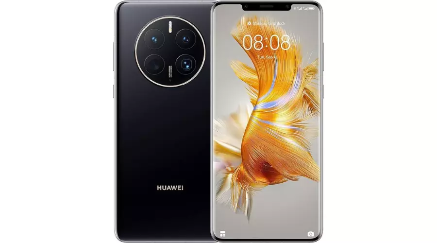
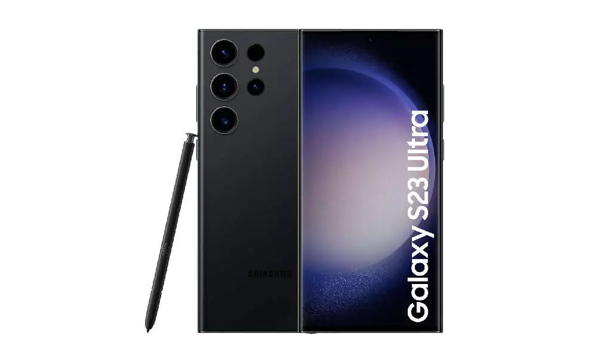
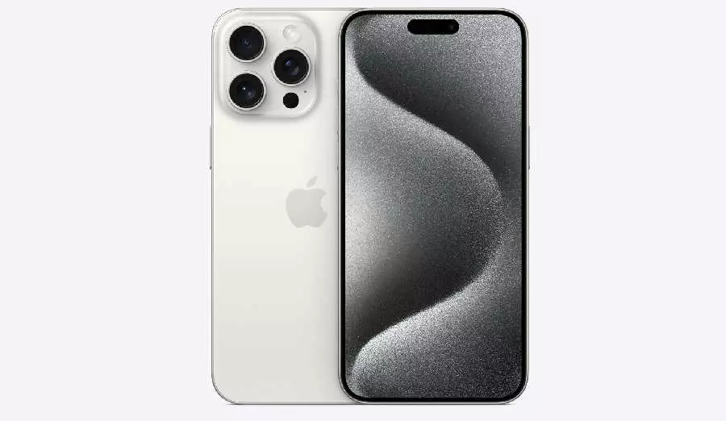

Las 4 Mejores Camaras De Celulares
Google Pixel 8 Pro
Dispone de una lente con teleobjetivo de 5 aumentos, así como un zoom de alta resolución, capaz de conseguir hasta los 30 aumentos. Por si esto no fuera suficiente, también dispone de una lente gran angular y de un enfoque macro. ¡Será casi como si tuvieras una cámara profesional contigo! Estas son de 50 MP + 48 MP + 48 MP; en cuanto a la frontal, se mantiene en los 10 MP. Más allá de eso, tiene un procesador top y un chip de seguridad de última generación. Es un móvil potente, con una batería bestial y un precio bastante top.
Huawei Mate 50 Pro
Su versátil cámara trasera cuenta con un sensor principal de 50 MP con OIS y apertura ajustable de f/1.4 a f/4, un gran angular de 13 MP con apertura f/2.2, y un sistema automático de 64 MP con OIS y zoom óptico de x3.5. El zoom digital alcanza hasta x100, ofreciendo una increíble capacidad de acercamiento. En la parte frontal, la cámara de 13 MP con apertura f/2.4 y el sensor ToF aseguran selfies detallados y efectos de profundidad precisos. Más allá de la cámara, cuenta con un procesador premium y 8 GB de RAM, con lo cual podrás sacarle el máximo partido en todos los sentidos.
Samsung Galaxy S23 Ultra
Del Samsung Galaxy S23 Ultra ya habrás oído hablar en más de una ocasión, así como de su increíble cámara de nada más y nada menos que 200 MP. Esa es solo la lente frontal, porque luego cuenta con otras tres lentes: ultra gran angular, sensor de profundidad y, cómo no, también una lente macro.
iPhone 15 Pro Max
Dispone de una cámara trasera con triple lente de 48 MP + 12 MP + 12 MP, con una gran angular, un teleobjetivo y una ultra gran angular. Además, destaca en disponer de una lente teleobjetivo con cinco aumentos, que te permitirá disfrutar de un zoom de hasta 25 aumentos en total. ¡Una auténtica locura! Asimismo, dispone de un sistema de estabilización óptico que conseguirá que los resultados sean óptimos.